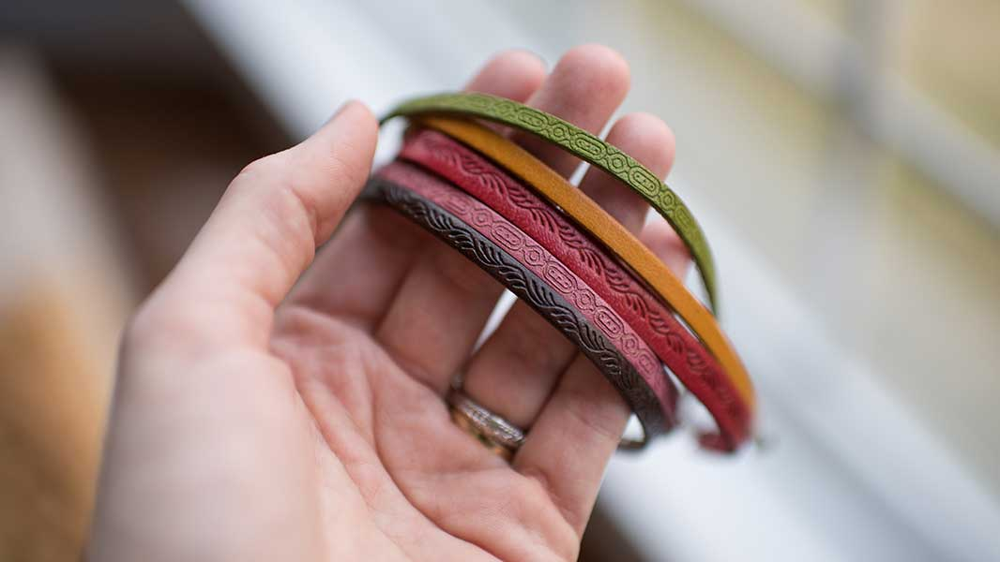

Loyal Rescue has been taking on more dogs than ever. As such we have much more medical bills to pay for all these poor dogs.
Loyal Rescue has parterned with Natural Leather Wraps to raise money this month. Until the end of the month Natural Leather Wraps will donate 5% of the profit made to Loyal Rescue. Remember these make a great Mothers Day gift!

Natural Leather Wraps come in red, green and brown!
March 21, 2017 2:21PM
Dog of the Week: Rusty
Rusty has recovered fully after getting hit by a car.
He unfortunately lost one leg during the process. But now Rusty is ready to go to a new home with loving pet parents.